PEDIA
Sato Pharma · Pedia
SATO
LACTO ADVANCED
With Ivyronc & Guamusin
1
400 g
Lacto Advanced
2
400 g
Lacto Advanced
35
mg / 5 ml
Ivyronc
12
sachets × 5 g
Guamusin
لاكتو أدفانسد · چواموسين
Lacto Advanced: improved infant formula, 400 g. Ivyronc: ivy leaf extract powder, 35 mg per 5 ml, 100 ml syrup.
Guamusin: paracetamol micronized, guaifenesin and phenylephrine hydrochloride per sachet — not for children under 12 years.
Guamusin: paracetamol micronized, guaifenesin and phenylephrine hydrochloride per sachet — not for children under 12 years.

- The line
- Three products, four presentations


- The lead
- Lacto Advanced, in its two presentations
- Forms
- Infant formula, syrup, and powder for oral solution
- Read the pack
- Guamusin is not for children under 12 years
Sato Pharma · Pedia
www.satopharma.com